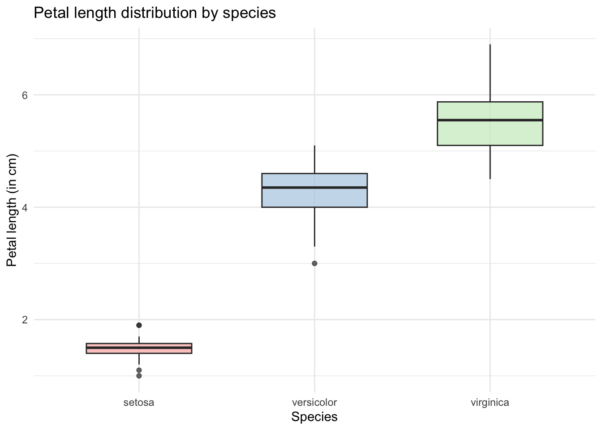
Visualizing and presenting the data
CHC9012 | National Taiwan Normal University
Overview
This week, we will learn how to visualize the results
Visualize your results:
- What types of figures to select?
- How to plot multiple information in one figure?
A brief summary of this week’s new functions:
ggplot(): Initializes a ggplot object and creates the blank visual canvas, linking it to the specified dataset.aes(): Generates aesthetic mappings, which connect specific columns/variables in the dataset to visual properties of the plot (like the x-axis, y-axis, color, or fill).geom_boxplot(): Adds a box-and-whisker plot layer to visualize the distribution, median, and quartiles of continuous data.labs(): Modifies labels across the plot, allowing you to customize the main title, subtitle, x-axis text, and y-axis text.theme_minimal(): Applies a clean, minimalist design theme by removing the default heavy gray background while keeping faint gridlines.theme(): Dynamically customizes deep aesthetic details of the active theme, used here to hide the chart legend (legend.position = “none”).scale_y_continuous(): Controls the behavior, absolute limits, specific tick intervals (breaks), and out-of-bounds (oob) handling for a continuous y-axis.1:7: A shorthand colon operator that generates a sequential integer vector from 1 to 7 (1, 2, 3, 4, 5, 6, 7).summarySE(): A helper function (typically from the Rmisc package) that automatically calculates descriptive summary statistics—including sample size (N), mean, standard deviation (sd), standard error (se), and confidence intervals (ci)—grouped by independent variables.geom_col(): Draws a column chart where the heights of the bars represent the actual raw values provided in the y-axis aesthetic mapping.geom_errorbar(): Adds vertical error bar elements to the plot using explicit upper (ymax) and lower (ymin) statistical boundaries.geom_text(): Draws literal text labels directly onto the plot framework using specified positions and structural adjustments.round(): Rounds numerical values to a specified number of decimal places (e.g., round(Value, 2) rounds to 2 decimal places).geom_jitter(): Adds a scatter plot layer where data points are randomly shifted by tiny amounts (width and height) to prevent overlap and reveal data density.seq(): Generates a highly controlled mathematical sequence of numbers defining a starting point, ending point, and uniform skipping step size (e.g., seq(0, 20000, by = 4000)).%>%: The tidyverse pipe operator; passes the output data structure of the left-hand function directly as the first argument into the right-hand function.distinct(): Retains only unique/distinct rows from an input dataframe based on specified column values, removing duplicate entries.select(): Picks specific columns out of a large dataframe to keep, while dropping all unnamed columns.factor(): Converts a standard character or numeric variable into a robust categorical Factor vector, allowing you to lock in custom chronological hierarchies via its levels argument.c(): Combine/Concatenate function; groups standalone strings, variables, or elements into a unified vector.geom_bar(): Draws a bar chart where the height of the bar is calculated automatically by counting the total number of observations falling into each category on the x-axis.after_stat(): A specific ggplot evaluation function that instructs layers to calculate and map internal statistical steps (like count) after the initial data transformation is complete.scale_fill_brewer(): Sets categorical color palettes using discrete color configurations originally designed by ColorBrewer.theme_classic(): Applies a traditional presentation theme consisting of a pure white background with clean, high-contrast black x and y axis lines.expansion(): Configures explicit numerical margins/padding along the outer edges of a scale, preventing text labels or bars from clipping at the boundaries.
Please complete the following tasks before our next meeting:
👀 Part 1: Why using figures, and what kinds of figures?
Why plotting the data?
Strictly speaking, we can provide results tables, including all potentially interesting information, and even provide access to the full dataset as well. Then, why the need to visualize the data?
- The nature of human cognition is such that figures are more attractive than tables and texts. It can therefore be very useful to communicate our message more effectively.
- As we saw last week, summary figures can be very useful to understand the general pattern of results while acknowledging finer-grained variation.
Introduction to most commons types of figures in experimental linguistics:
What it does: Visualizes the spread, median, quartiles, and outliers of a continuous numerical variable across different categorical groups.
Core question: How does data distribution compare between groups? (e.g., Which Iris species has the longest petals?)
What it does: Displays counts or frequencies of distinct categories. By default,
geom_bar()counts the number of rows for each category on the x-axis, hence the need sometimes to summarize the data beforehand.Core question: Which categories are the most and least common in our dataset?
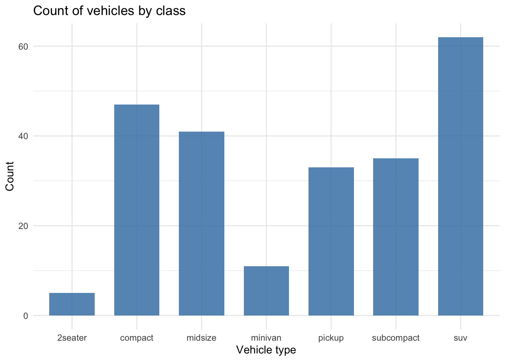
What it does: Connects individual data points chronologically or sequentially to reveal trajectories, spikes, or downward dips.
Core question: How is our metric moving over a continuous sequence?
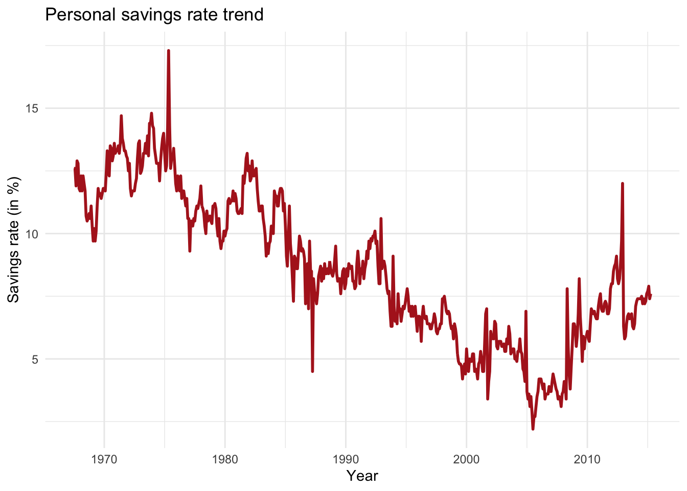
What it does: Plots individual data points at the intersection of two continuous numeric variables to display positive, negative, or non-linear correlations.
Core question: Does variable X increase, decrease, or remain unchanged as variable Y changes?
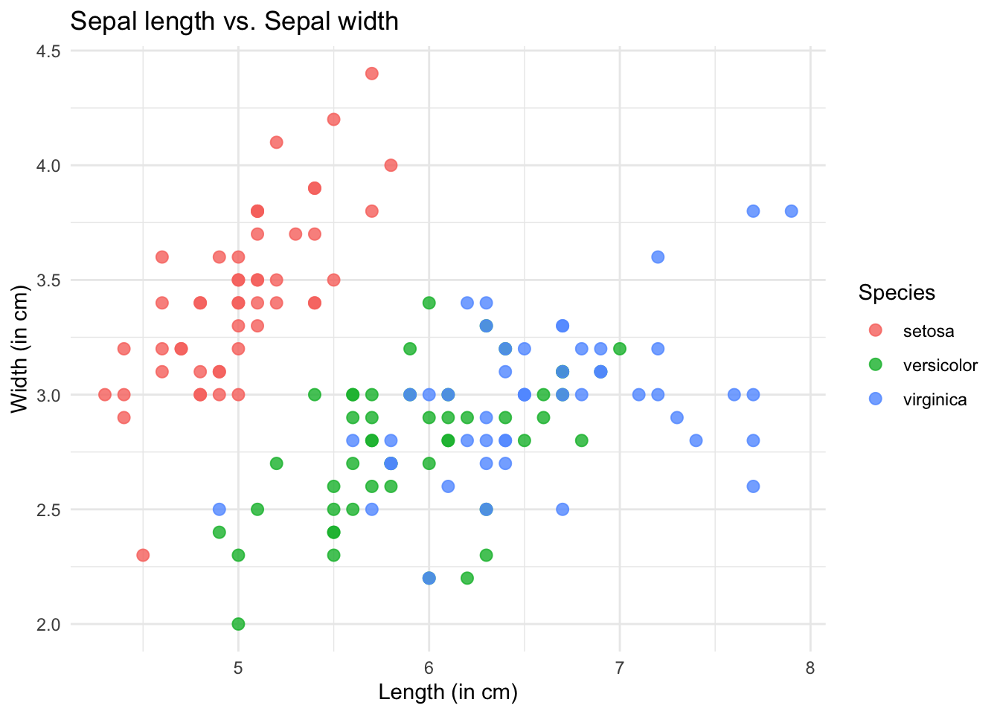
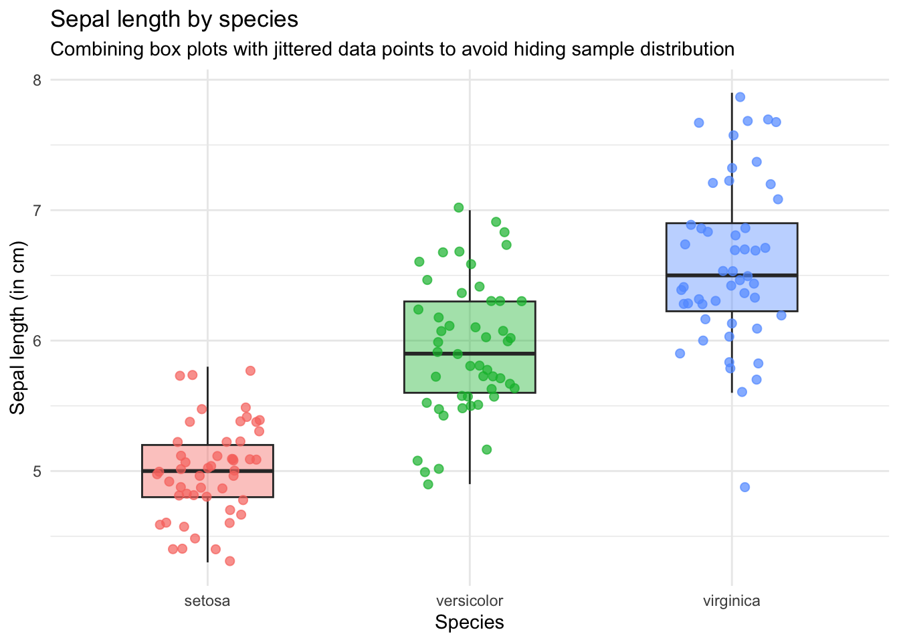
Part 2: A step-by-step guide to plot figures with R
2.1 Introduction to ggplot and its spirit
Most researchers using R and even other programming languages often, if not always, use the ggplot2 package. It gives us full control of what we want to plot, we can customize the figure as we wish by adding legends, annotations, changing the theme and the colors, etc.
ggplot2 uses a philosophy called the Grammar of Graphics (Wilkinson, 2005). The core spirit of ggplot2 is that any data visualization can be broken down into a series of independent layers stacked on top of one another.
- Here is an overview of the step-by-step process to create a figure with
ggplot2:
Step 1: Initialize
Create the empty canvas.
↓
Step 2: Indicate what to plot
In ggplot2 terms, this is calles the ‘aesthetics’ (aes()).
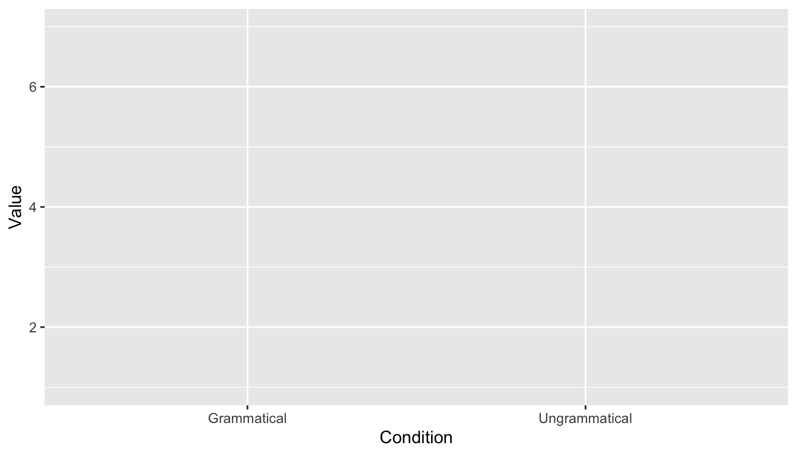
↓
Step 3: Indicate how to plot
This is the step where you decide the kind of plot you want to use.
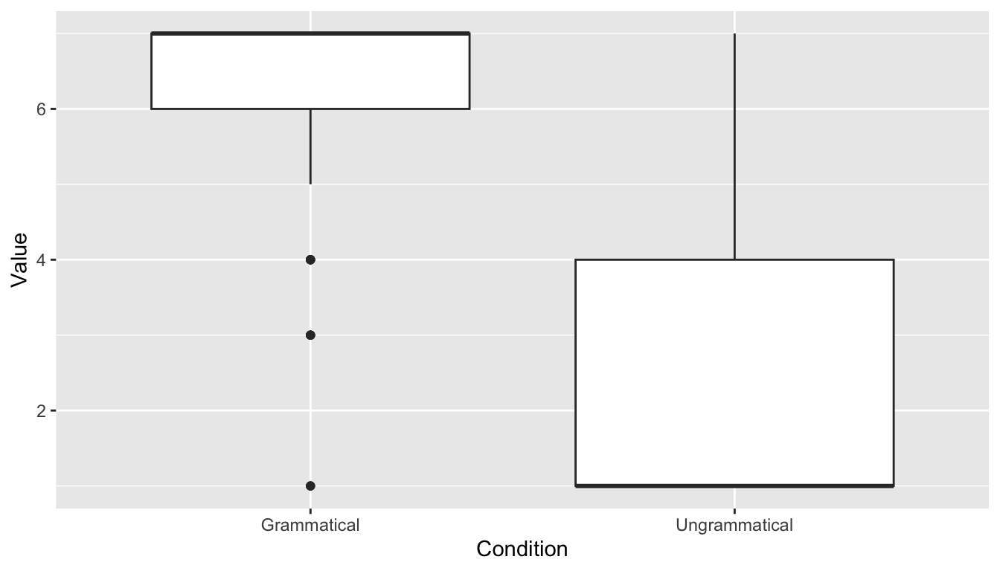
↓
Step 4: Polish the details
Change the theme, the color, add a title (and subtitle), change the legend, the font style and size, etc.
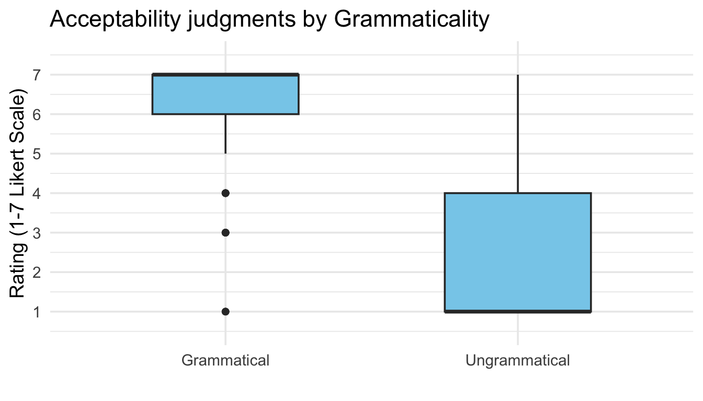
2.2 Example with the acceptability results
Aim of this section
We will look at how to use ggplot2 to plot a boxplot of the acceptability judgment results we cleaned last week.
library(ggplot2)
library(dplyr)
library(Rmisc)## 2.1 Select the participants with a human-like behavior
PartMeanRT <- aggregate(RT ~ ID_1_TimeReceived,
data = data3,
FUN = mean)
data_OtherPart <- subset(PartMeanRT, RT > 1000)
data_OtherPart_FullData <- droplevels(subset(data3,
ID_1_TimeReceived %in% data_OtherPart$ID_1_TimeReceived))
plot(data_OtherPart_FullData$RT ~ data_OtherPart_FullData$ID_1_TimeReceived, outline = FALSE)
plot(data_OtherPart_FullData$Value ~ data_OtherPart_FullData$Condition)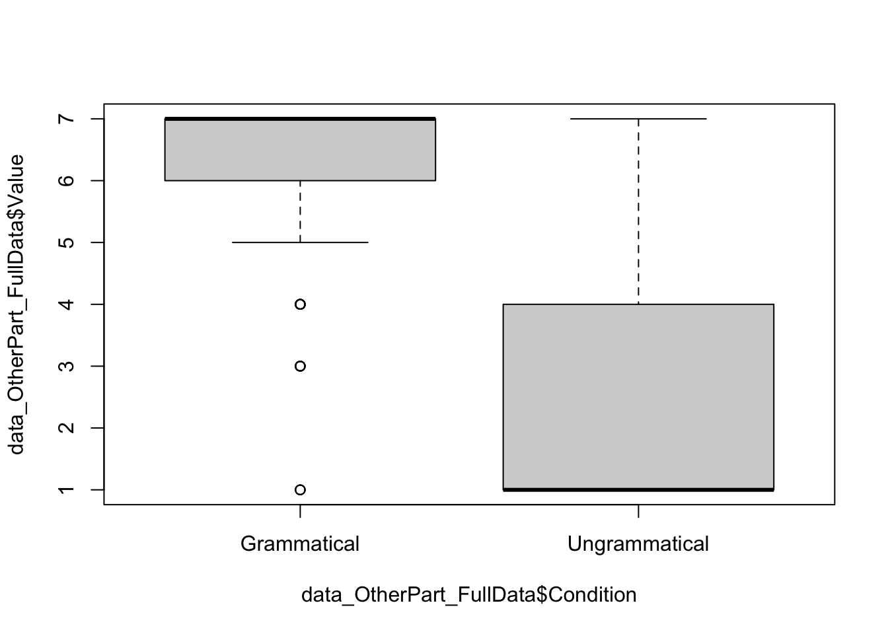
## 2.2 Remove outlier trials
### 2.2.1 Absolute values
data_OtherPart_CleanAbsolute <- subset(data_OtherPart_FullData, RT > 200 & RT < 20000)
### 2.2.2 Relative values
# Calculate the mean per Participant and Condition
data_OtherPart_CleanAbsolute$m_rt <- ave(data_OtherPart_CleanAbsolute$RT,
data_OtherPart_CleanAbsolute$ID_1_TimeReceived,
data_OtherPart_CleanAbsolute$Condition,
FUN = mean)
# 2. Calculate the SD per Participant and Condition
data_OtherPart_CleanAbsolute$sd_rt <- ave(data_OtherPart_CleanAbsolute$RT,
data_OtherPart_CleanAbsolute$ID_1_TimeReceived,
data_OtherPart_CleanAbsolute$Condition,
FUN = sd)
# 3. Subset the data to remove outliers
data_OtherPart_CleanAbsoluteRelative <- subset(data_OtherPart_CleanAbsolute,
RT >= (m_rt - 2.5 * sd_rt) &
RT <= (m_rt + 2.5 * sd_rt))
### 2.2.3 Calculate the number of trials removed
FullData_NbTrials <- nrow(data_OtherPart_FullData)
TrimmedData_NbTrials <- nrow(data_OtherPart_CleanAbsoluteRelative)
# Number of trimmed trials
NbTrimmedTrials <- FullData_NbTrials - TrimmedData_NbTrials
NbTrimmedTrials[1] 14# Proportion (%)
NbTrimmedTrials*100/FullData_NbTrials[1] 4.666667ggplot(data_OtherPart_CleanAbsoluteRelative)
ggplot(data_OtherPart_CleanAbsoluteRelative,
aes(x = Condition,
y = Value))
ggplot(data_OtherPart_CleanAbsoluteRelative,
aes(x = Condition,
y = Value)) +
geom_boxplot()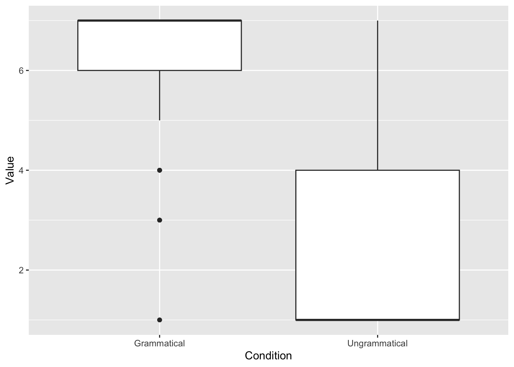
# Add colors
ggplot(data_OtherPart_CleanAbsoluteRelative,
aes(x = Condition,
y = Value,
fill = Condition)) +
geom_boxplot(fill = "skyblue")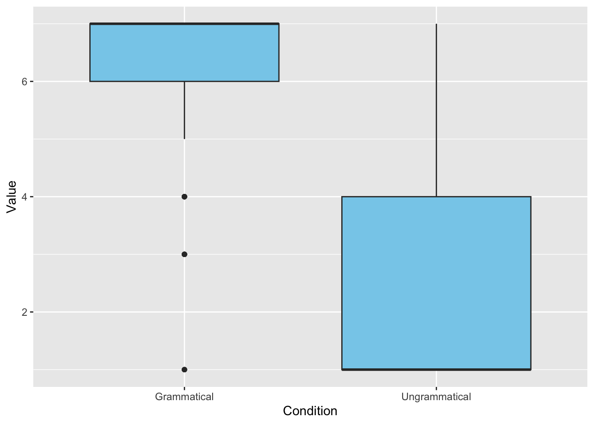
# Add title and legend, change the theme
ggplot(data_OtherPart_CleanAbsoluteRelative,
aes(x = Condition,
y = Value,
fill = Condition)) +
geom_boxplot(fill = "skyblue",
width = 0.5) +
labs(title = "Acceptability judgments by Grammaticality",
x = "",
y = "Rating (1-7 Likert Scale)") +
theme_minimal(base_size = 14) +
theme(legend.position = "none") 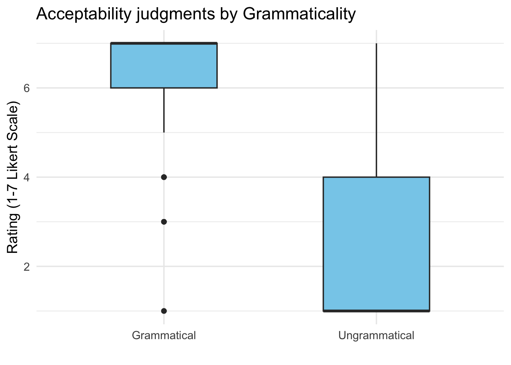
# Control the y axis
ggplot(data_OtherPart_CleanAbsoluteRelative,
aes(x = Condition,
y = Value,
fill = Condition)) +
geom_boxplot(fill = "skyblue",
width = 0.5) +
labs(title = "Acceptability judgments by Grammaticality",
x = "",
y = "Rating (1-7 Likert Scale)") +
theme_minimal(base_size = 14) +
theme(legend.position = "none") +
scale_y_continuous(limits = c(0.5, 7.5),
breaks = 1:7)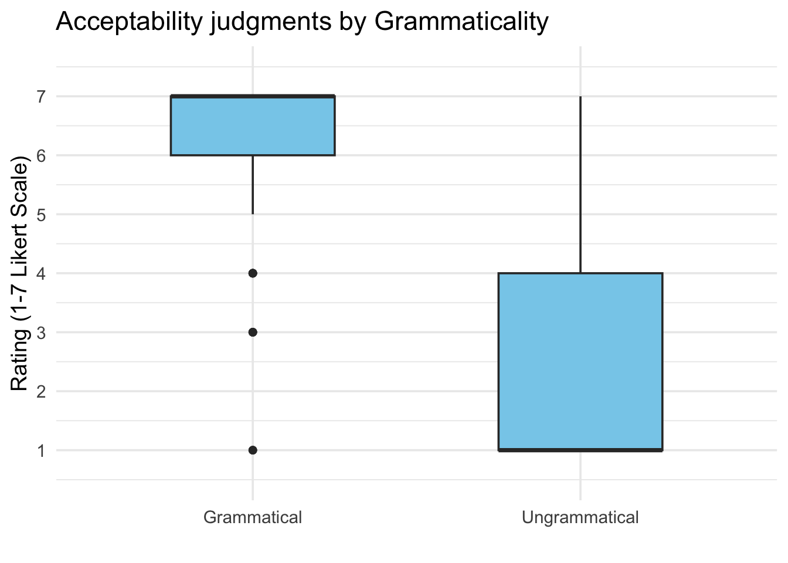
2.3 Visualizing other results: Reaction time and background information
2.3.1 Other figures for the acceptability ratings
- First, we create a summary table using the
summarySE()function
JudgSummary <- summarySE(data_OtherPart_CleanAbsoluteRelative,
measurevar = "Value",
groupvars = "Condition")- Then, we create the plot using the same step-by-step logic
# Create the canvas
ggplot(JudgSummary)
# Include what to plot (the "aesthetics")
ggplot(JudgSummary,
aes(x = Condition,
y = Value,
fill = Condition))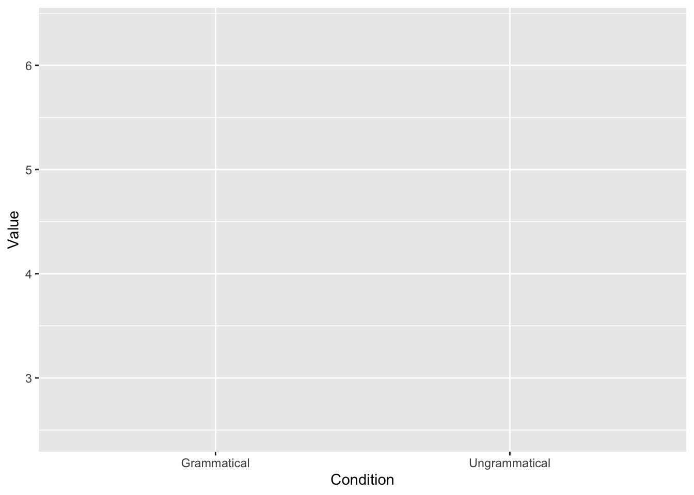
# Include how to plot
ggplot(JudgSummary,
aes(x = Condition,
y = Value,
fill = Condition)) +
geom_col(width = 0.5, alpha = 0.9)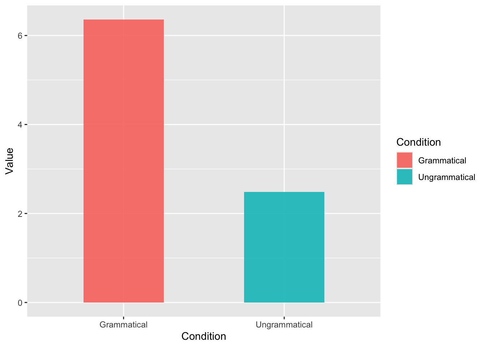
# Include error bars
ggplot(JudgSummary,
aes(x = Condition,
y = Value,
fill = Condition)) +
geom_col(width = 0.5, alpha = 0.9) +
geom_errorbar(aes(ymin = Value - ci,
ymax = Value + ci),
width = 0.15,
size = 0.7) Warning: Using `size` aesthetic for lines was deprecated in ggplot2 3.4.0.
ℹ Please use `linewidth` instead.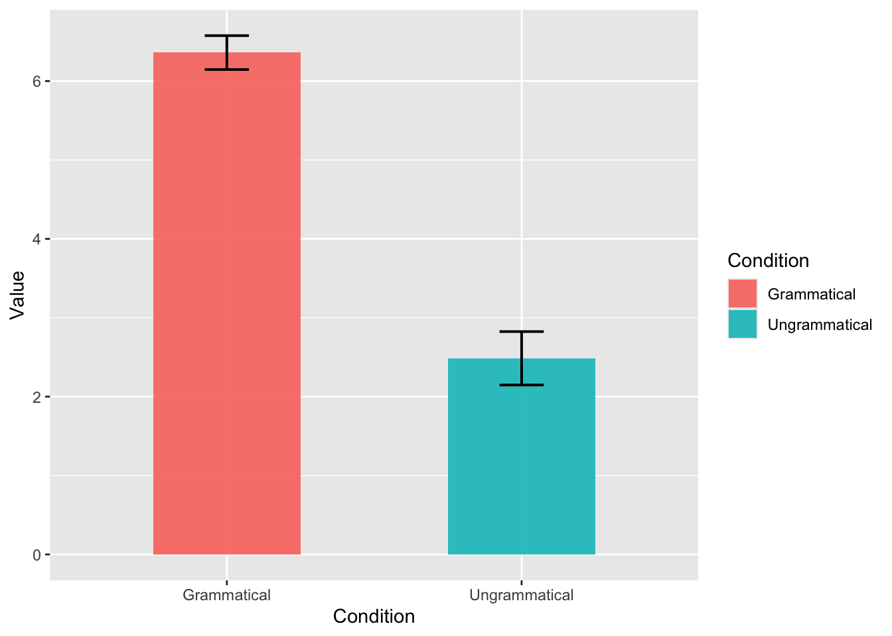
# Include text
ggplot(JudgSummary,
aes(x = Condition,
y = Value,
fill = Condition)) +
geom_col(width = 0.5, alpha = 0.9) +
geom_errorbar(aes(ymin = Value - ci,
ymax = Value + ci),
width = 0.15,
size = 0.7) +
geom_text(aes(label = round(Value, 2)),
vjust = 4,
color = "white",
size = 5,
fontface = "bold")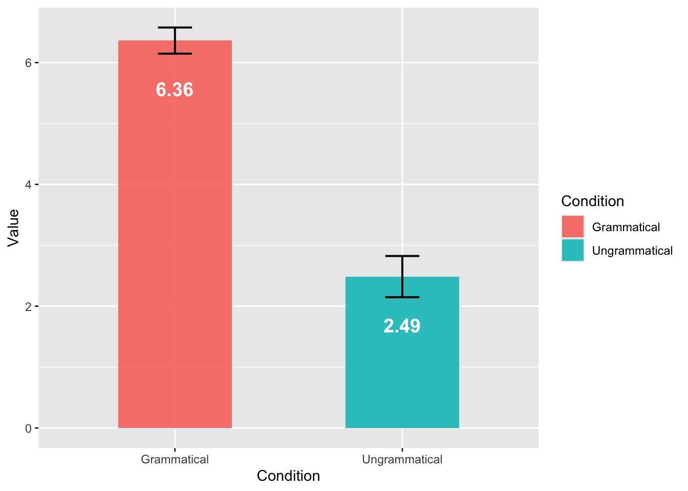
# Control the y axis
ggplot(JudgSummary,
aes(x = Condition,
y = Value,
fill = Condition)) +
geom_col(width = 0.5, alpha = 0.9) +
geom_errorbar(aes(ymin = Value - ci,
ymax = Value + ci),
width = 0.15,
size = 0.7) +
geom_text(aes(label = round(Value, 2)),
vjust = 4,
color = "white",
size = 5,
fontface = "bold") +
scale_y_continuous(limits = c(1, 7),
breaks = 1:7,
oob = scales::rescale_none)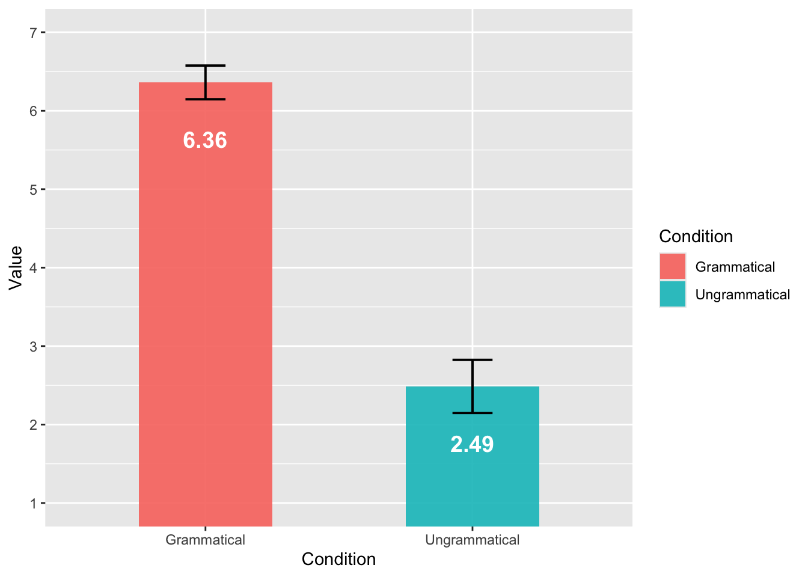
We know that there are many inter-item variation in this experiment. We can have a more complex figure to visualize all the information at the same time:
- Bar plots for the general pattern,
- Scatter plots to visualize the results from each trial.
We need two types of summary datasets: (1) general pattern, and (2) by-trial results.
JudgSummary <- summarySE(data_OtherPart_CleanAbsoluteRelative,
measurevar = "Value",
groupvars = "Condition")
JudgSummaryItem <- summarySE(data_OtherPart_CleanAbsoluteRelative,
measurevar = "Value",
groupvars = c("Condition", "ItemNo"))Now we can plot the data. The geom_col() maps with the aes() related to the overall pattern. The geom_jitter() includes a second aes() that maps with the dataset including the by-trial data.
ggplot(JudgSummary,
aes(x = Condition,
y = Value,
fill = Condition)) +
geom_col(width = 0.5, alpha = 0.9) +
geom_errorbar(aes(ymin = Value - ci,
ymax = Value + ci),
width = 0.15,
size = 0.7) +
geom_text(aes(label = round(Value, 2)),
vjust = 4,
color = "white",
size = 5,
fontface = "bold") +
scale_y_continuous(limits = c(1, 7),
breaks = 1:7,
oob = scales::rescale_none) +
geom_jitter(data = JudgSummaryItem,
aes(color = Condition),
width = 0.2,
height = 0.1,
alpha = 0.3,
size = 2.5)It is the plot that we want, but it is not easy to see all the dots (1 dot = 1 trial). We can adjust the shades and colors, and it is done!
ggplot(JudgSummary,
aes(x = Condition,
y = Value,
fill = Condition)) +
geom_col(width = 0.5, alpha = 0.3) +
geom_errorbar(aes(ymin = Value - ci,
ymax = Value + ci),
width = 0.15,
size = 0.7) +
geom_text(aes(label = round(Value, 2)),
vjust = 4,
color = "black",
size = 5,
fontface = "bold") +
scale_y_continuous(limits = c(1, 7),
breaks = 1:7,
oob = scales::rescale_none) +
geom_jitter(data = JudgSummaryItem,
aes(color = Condition),
width = 0.2,
height = 0.1,
alpha = 0.5,
size = 2.5) +
theme_minimal(base_size = 14)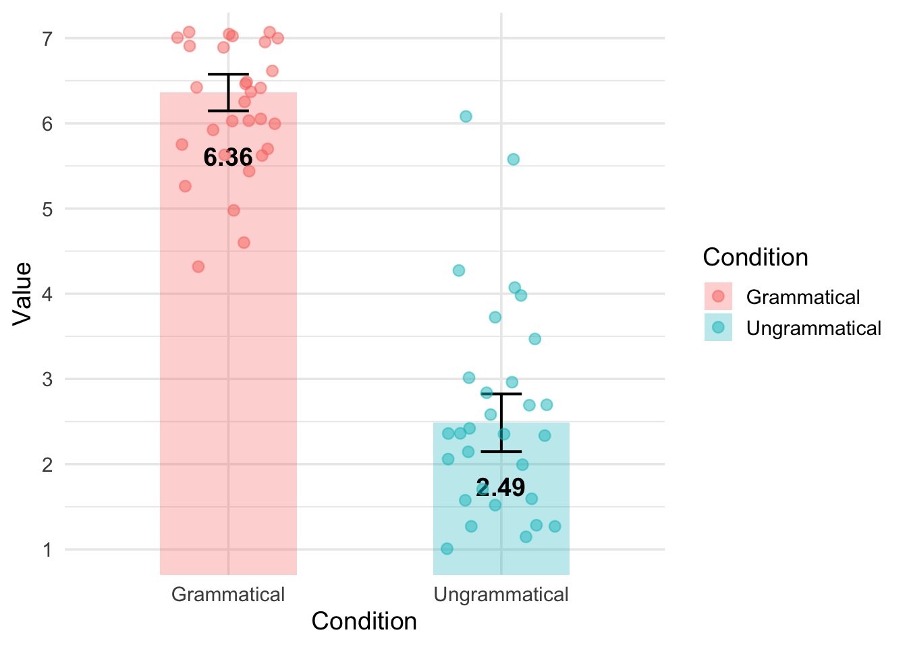
By doing so, we have a clear overview of the results, and at the same time, it is very easy to see that the Ungrammatical condition includes some outliers.
2.3.2 Visualizing the reaction time
We can start with a boxplot, such as the one we used last week, but prettier.
ggplot(data_OtherPart_CleanAbsoluteRelative,
aes(x = Condition,
y = RT,
fill = Condition)) +
geom_boxplot(fill = "skyblue",
width = 0.5) +
labs(title = "RT by Grammaticality",
x = "",
y = "Reaction time (in millisecond)") +
theme_minimal(base_size = 14) +
theme(legend.position = "none") +
scale_y_continuous(limits = c(0, 20000),
breaks = seq(0, 20000, by = 4000))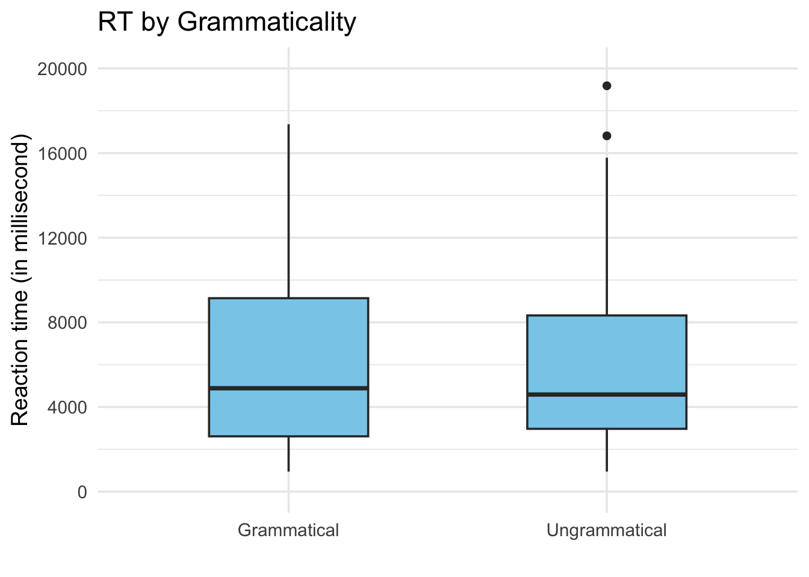
Such as for the acceptability ratings, we need to summarize the data first, and then plot the bar plot.
RTSummary <- summarySE(data_OtherPart_CleanAbsoluteRelative,
measurevar = "RT",
groupvars = "Condition")
ggplot(RTSummary,
aes(x = Condition,
y = RT,
fill = Condition)) +
geom_col(width = 0.5, alpha = 0.9) +
geom_errorbar(aes(ymin = RT - ci,
ymax = RT + ci),
width = 0.15,
size = 0.7) +
geom_text(aes(label = round(RT)),
vjust = 8,
color = "white",
size = 5,
fontface = "bold") +
scale_y_continuous(limits = c(4000, 7000),
breaks = seq(4000, 7000, by = 1000),
oob = scales::rescale_none)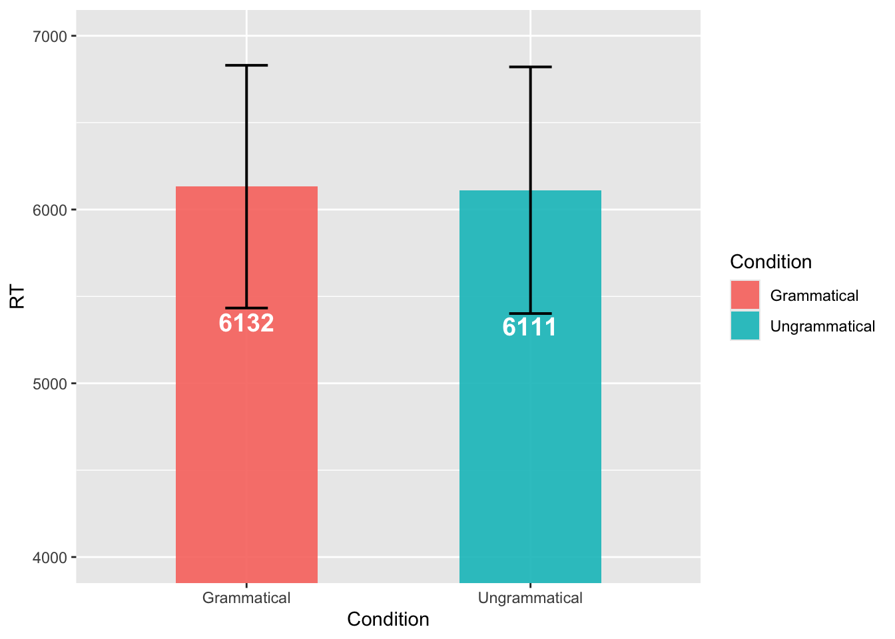
We are just using the same logic as previously. We have two datasets, mapping onto two different aes() to obtain a figure including the general pattern in addition to the by-trial information.
RTSummary <- summarySE(data_OtherPart_CleanAbsoluteRelative,
measurevar = "RT",
groupvars = "Condition")
RTSummaryItem <- summarySE(data_OtherPart_CleanAbsoluteRelative,
measurevar = "RT",
groupvars = c("Condition", "ItemNo"))
ggplot(RTSummary,
aes(x = Condition,
y = RT,
fill = Condition)) +
geom_col(width = 0.5, alpha = 0.3) +
geom_errorbar(aes(ymin = RT - ci,
ymax = RT + ci),
width = 0.15,
size = 0.7) +
geom_text(aes(label = round(RT)),
vjust = 8,
color = "black",
size = 5,
fontface = "bold") +
scale_y_continuous(limits = c(3000, 9000),
breaks = seq(3000, 9000, by = 2000),
oob = scales::rescale_none) +
geom_jitter(data = RTSummaryItem,
aes(color = Condition),
width = 0.2,
height = 0.1,
alpha = 0.5,
size = 2.5) +
theme_minimal(base_size = 14)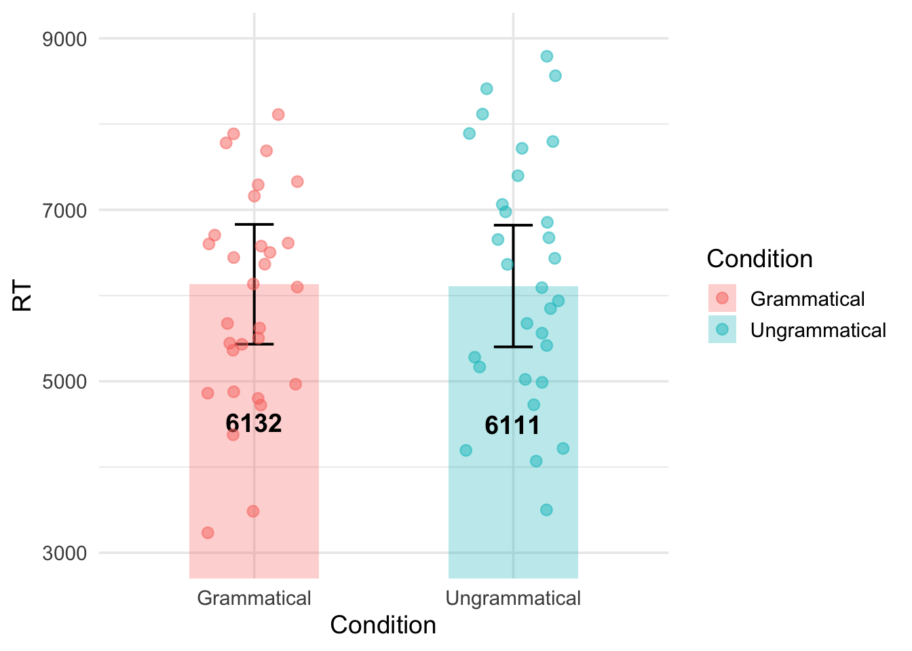
2.3.3 Visualizing the background information
Our dataset includes more than 20 observations per participants, meaning that the same type of information (e.g., the age and highest degree of Participant 1) appears more than 20 times. Therefore, we need to create a new dataset where “1 row = 1 participant”.
ParticipantBackground <- data_OtherPart_CleanAbsoluteRelative %>%
distinct(ID_1_TimeReceived, .keep_all = TRUE) %>%
select(ID_1_TimeReceived, UserAge, UserDegree)
ParticipantBackground$UserDegree <- factor(ParticipantBackground$UserDegree,
levels = c("High school", "BA", "MA", "Ph.D.") )ggplot(ParticipantBackground, aes(x = "", y = UserAge)) +
geom_boxplot(
width = 0.4,
fill = "#4a90e2",
color = "black",
alpha = 0.7
) +
theme_classic(base_size = 14) +
labs(x = "",
y = "Age") +
theme(legend.position = "none")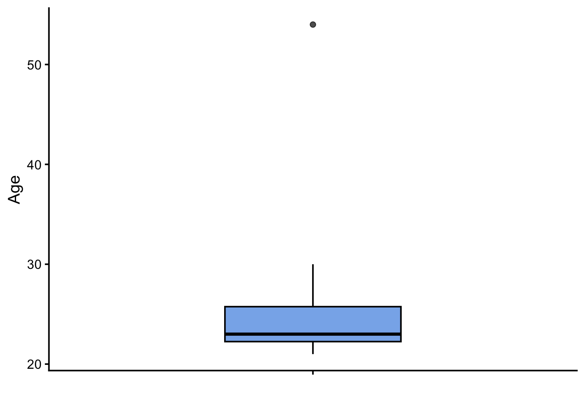
It is easy to see that the majority of the participants are between 20 and 30 years old. There is only one participant who is much older.
ggplot(ParticipantBackground,
aes(x = UserDegree,
fill = UserDegree)) +
geom_bar(width = 0.5,
color = "black",
alpha = 0.8,
show.legend = FALSE) +
geom_text(stat = "count",
aes(label = after_stat(count)),
vjust = -0.5,
size = 5) +
labs(x = "",
y = "Number of participants") +
scale_fill_brewer(palette = "Pastel1") +
theme_classic(base_size = 14) +
scale_y_continuous(expand = expansion(mult = c(0, 0.15)))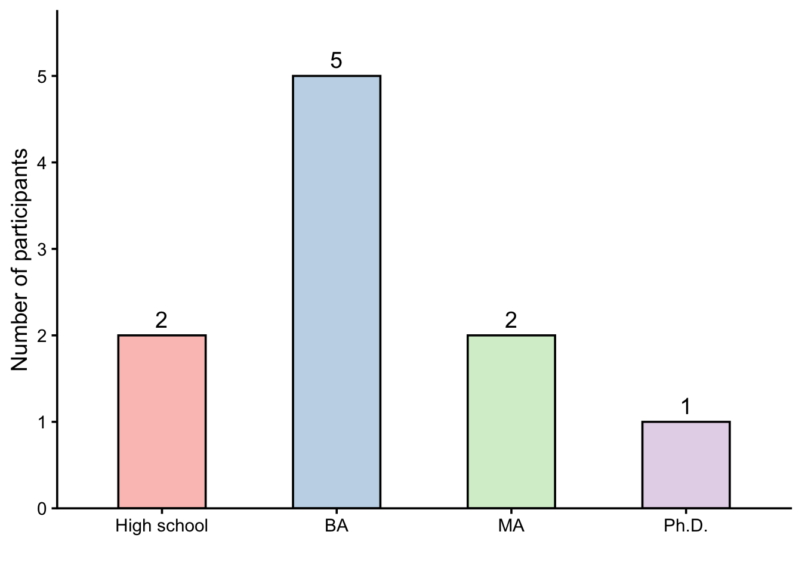
ggplot(ParticipantBackground,
aes(x = UserDegree,
y = UserAge,
fill = UserDegree)) +
geom_jitter(width = 0.1,
height = 0,
alpha = 0.5,
size = 2.5,
color = "dimgray") +
geom_boxplot(width = 0.4,
alpha = 0.7,
outlier.shape = NA) +
labs(x = "Highest degree",
y = "Age") +
scale_fill_brewer(palette = "Pastel1") +
theme_classic(base_size = 14) +
theme(legend.position = "none")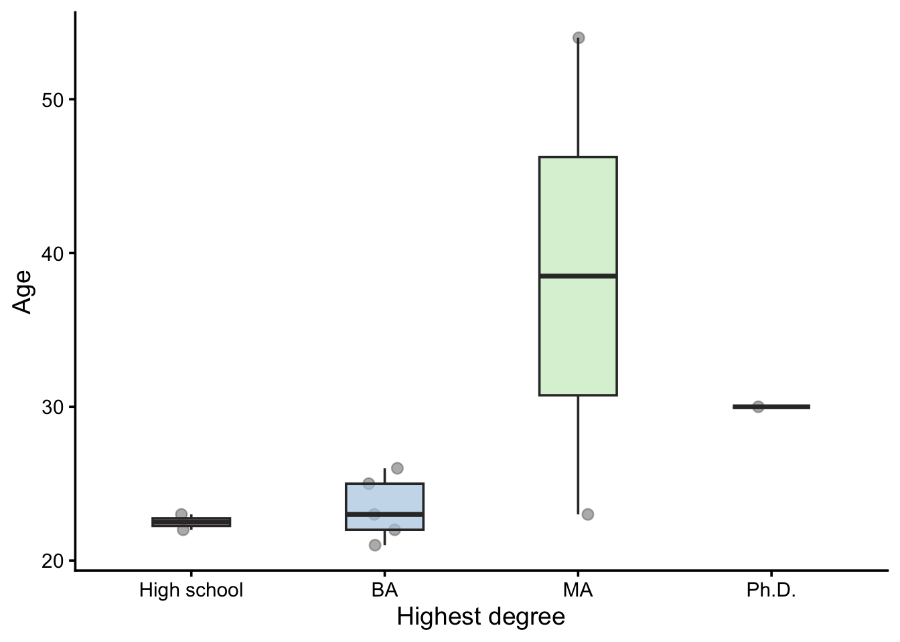
📝 Assignment for next week
Please complete the following tasks before our next meeting: